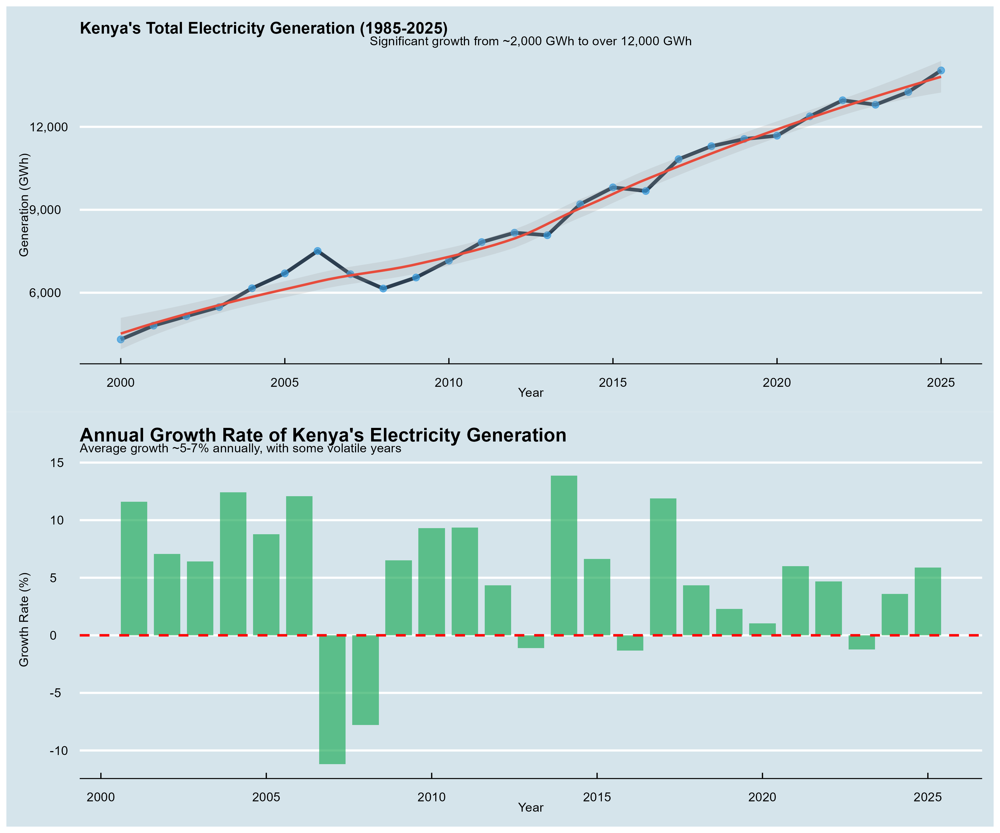
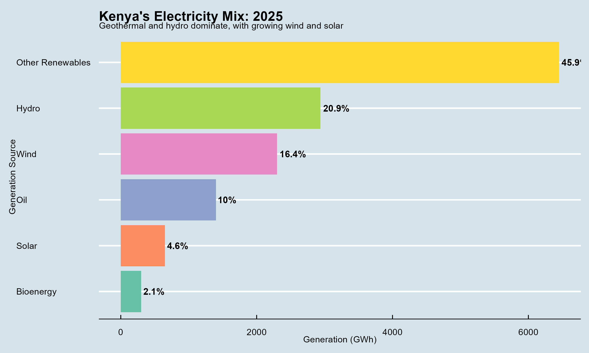
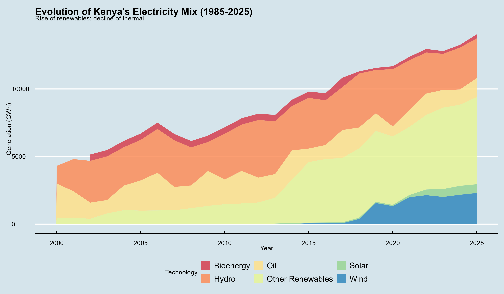
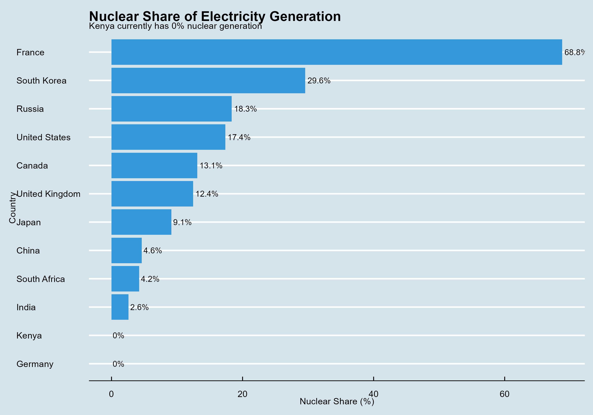
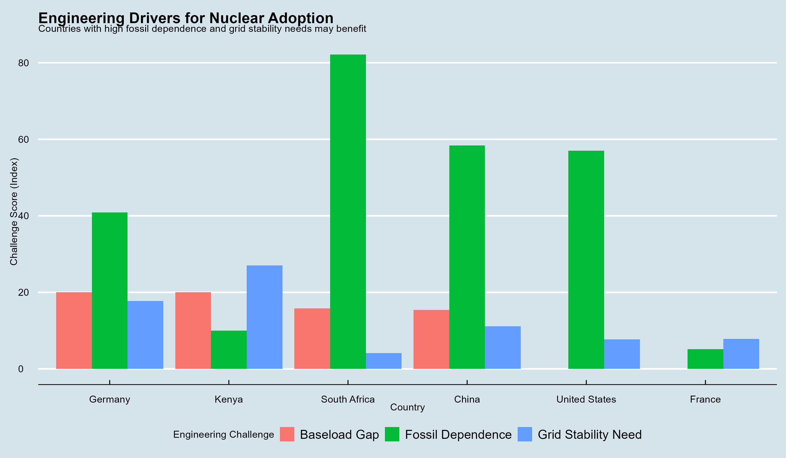
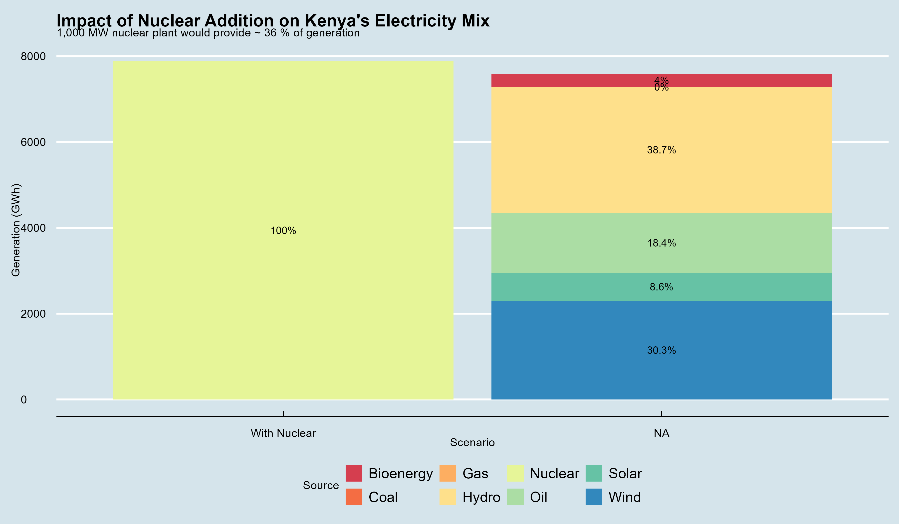
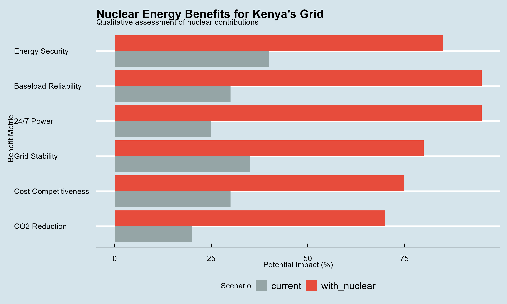

Data Source: Our World in Data - Electricity production by source (Ember/Energy Institute)
Analysis Date: 2026-07-30
Total generation has grown from 4310 GWh to 14040 GWh, a CAGR of 4.8%.

Other Renewables is the leading source with 45.9% of generation.


Kenya has 0% nuclear share, compared to 68.8% in France and 4.2% in South Africa.

Key drivers include fossil dependence, grid stability needs, and baseload gaps.

A 1,000 MW nuclear plant could provide 36% of Kenya's generation.

